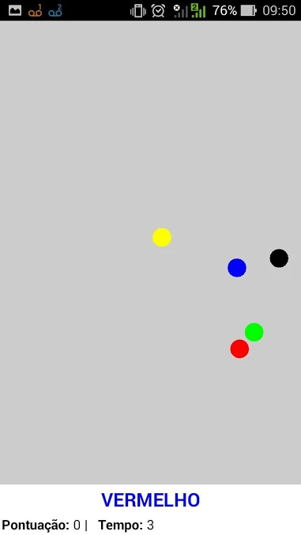
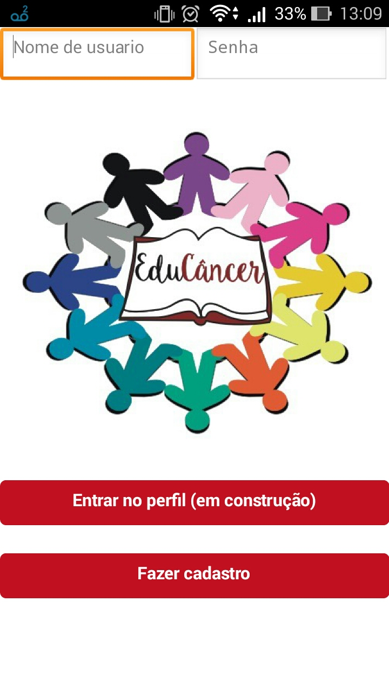

Luídi Matheus Silva de Oliveira
Brasileiro, 19 anos
- Bacharelado em Sistemas de Informação. Instituto Federal Fluminense – campus Campos Centro, previsão de conclusão em 2020.
- Técnico em Informática. Instituto Federal Fluminense – campus Campos Centro, conclusão em 2016.
Experiência Profissional
- Bolsista do setor de redes da Diretoria da Tecnologia da Informação e Comunicação, IFF – Campos Centro (08/2017 – Atualmente)
- Instrutor em curso de Informática Básica na empresa Company Treinamentos (07/2017 – 09/2017)
Qualificações e Atividades Complementares
- Inglês - Intermediário
- Linguagens de programação - C, Java, SQL, HTML 5, PHP, CSS, Python, Shell script
- Curso Profissionalizante em Designer Gráfico (Prepara, 2011 - Carga Horária: 64 horas)
- Curso Profissionalizante em Web Designer (Prepara, 2012 - Carga Horária: 96 horas)
- Participação na 22a Semana do Saber Fazer Saber Ser (IFF, 2015)
- Participação no IV Encontro de Gerenciamento de Projetos do PMIRIO em Campos dos Goytacazes (IFF, 2017)
- Participação no 9o Congresso Integrado da Tecnologia da Informação (IFF, 2017)
- Minicurso Aplicação de Realidade Aumentada Personalizada (IFF, 2017 – Carga Horária: 4 horas)
- Participação na Campus Party Brasil 11 (São Paulo – SP, 2018)
Contato
- E-mail: luidi_mso@outlook.com
- Telefone: +55 22 30262823
- Celular: +55 22 996126092
- Facebook: Link
- Instagram: Link
OraBolas

Jogo para android desenvolvido no final do curso técnico em informática.
EduCancer

Aplicativo sendo desenvolvido.